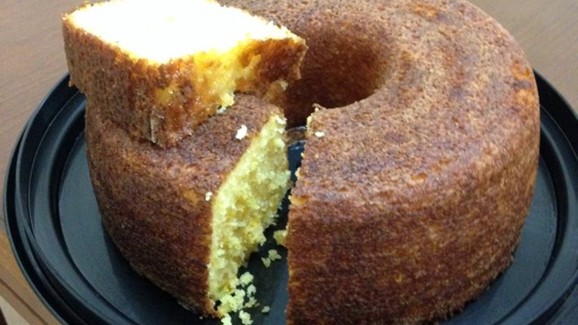
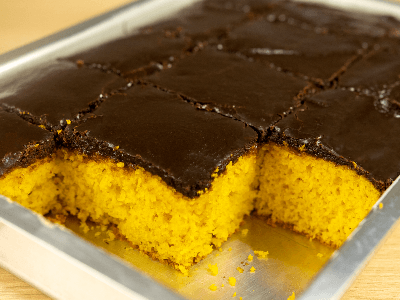

Ingredientes:
06 xícaras (chá) de farinha de trigo
02 colheres (sopa) de açúcar
1/2 colher (chá) de sal
03 ovos
01 xícara (chá) de óleo
01 xícara (chá) de leite
03 tabletes de fermento biológico (45 gramas)
farinha de trigo para polvilhar
Recheio:
04 colheres (sopa) de margarina sem sal em temperatura ambiente
01 xícara (chá) de açúcar
Para umedecer:
1/2 xícara (chá) de leite
1/2 xícara (chá) de açúcar
Modo de preparo:
Coloque a farinha de trigo em uma tigela, faça um buraco no meio e junte o açúcar, o sal, os ovos, o óleo e o fermento dissolvido no leite.
Misture com um garfo e depois amasse com as mãos, em uma superfície polvilhada com farinha de trigo, por 5 minutos ou até obter uma massa que solte das mãos. Volte a massa para a tigela e deixe crescer por 40 minutos. Abaixe a massa e abra com um rolo em uma superfície polvilhada com farinha de trigo até obter um retângulo (50x40 cm).
Recheio:
Misture a margarina com o açúcar e espalhe com as costas de uma colher sobre a massa.
Montagem:
Enrole a massa como rocambole pelo lado mais comprido.
Corte o rocambole em 5 pedaços e coloque em pé um ao lado do outro, deixando um espaço entre eles, numa fôrma de buraco no meio (25cm), untada com margarina. Deixe crescer por mais 30 minutos. Asse em forno médio, préaquecido por 40 minutos ou até que esteja dourado. Retire do forno. Ferva o leite reservado para umedecer a massa e misture com o açúcar. Jogue por cima do pão ainda quente. Desenforme ainda morno e deixe esfriar.
Bolo de milharina e milho verde

Ingredientes:
1 lata de milho verde (com a água)
1 lata de milharina
1 lata de leite
1/2 lata de óleo
1 lata de açúcar
3 ovos
1 colher (chá) de sal
1 colher (sopa) de fermento químico
1 pacote de coco ralado (100g)
Modo de preparo:
Bata tudo no liquidificador coloque em uma forma média untada com margarina e enfarinhada com furo central leve pro forno pré-aquecido.
O bolo fica aproximadamente 35 minutos no forno a 200ºC.
Bolo de cenoura (receita da tia Li)

Ingredientes:
03 cenouras médias raladas
01 xícara (chá) de óleo
02 xícaras (chá) de açúcar
03 xícaras (chá) de farinha de trigo peneirada
03 ovos inteiros
01 pitada de sal
01 colher (sopa) de fermento em pó
Modo de preparo:
No liquidificador bata as cenouras, os ovos, o óleo e a pitada de sal, bata bem. Em uma tigela coloque a farinha de trigo misturada com o fermento e o açúcar, despeje o liquido já batido e misture bem.
Coloque a massa em uma fôrma untada e enfarinhada e asse em forno pré aquecido a 180 graus por 40 minutos ou até que esteja dourado.
Calda:
04 colheres de chocolate em pó
04 colheres de açúcar
04 colheres de leite
01 caixinha de creme de leite
Misture todos os ingredientes e leve ao fogo até engrossar.